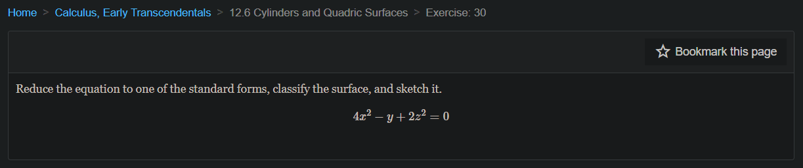
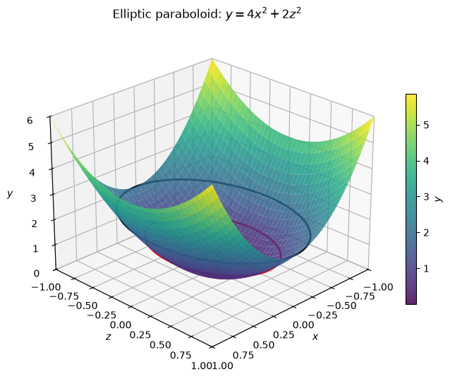
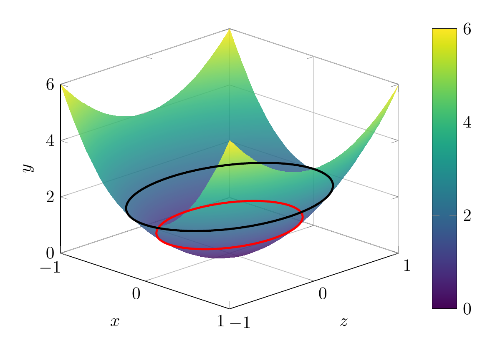

Path: mcma-Nex-N2-Pro/calculus-12.6.30/chat_20260825_013836_715000_utc_0800
Problem
Please solve the math problem in the image.

End of problem
Answer
Given
$$
4x^2-y+2z^2=0.
$$
Move the linear term to the other side:
$$
y=4x^2+2z^2.
$$
This is already in standard form for an elliptic paraboloid. The standard form is
$$
y=ax^2+bz^2,\qquad a>0,\ b>0.
$$
So the surface is an **elliptic paraboloid opening in the positive $y$-direction**, with vertex at the origin.
Useful traces:
- In the plane $y=0$: $4x^2+2z^2=0$, so only the point $(0,0,0)$.
- In the plane $y=c>0$:
$$
4x^2+2z^2=c,
$$
an ellipse.
- In the plane $z=0$:
$$
y=4x^2,
$$
a parabola opening in the positive $y$-direction.
- In the plane $x=0$:
$$
y=2z^2,
$$
also a parabola opening in the positive $y$-direction.
Therefore, the surface is an elliptic paraboloid opening upward along the $y$-axis.
\[
\boxed{\text{Elliptic paraboloid, } y=4x^2+2z^2}
\]
---


\documentclass[tikz,border=10pt]{standalone}
\usepackage{pgfplots}
\pgfplotsset{compat=1.18}
\begin{document}
\begin{tikzpicture}
\begin{axis}[
xlabel={$x$}, ylabel={$z$}, zlabel={$y$},
view={45}{25},
domain=-1:1, y domain=-1:1,
samples=35, samples y=35,
xmin=-1, xmax=1, ymin=-1, ymax=1, zmin=0, zmax=6,
colormap/viridis,
colorbar,
grid=major
]
\addplot3[surf, shader=interp, opacity=0.85] {4*x^2 + 2*y^2};
\addplot3[red, very thick, domain=0:360, samples=120]
({sqrt(1/4)*cos(x)}, {sqrt(1/2)*sin(x)}, {1});
\addplot3[black, very thick, domain=0:360, samples=120]
({sqrt(2/4)*cos(x)}, {sqrt(2/2)*sin(x)}, {2});
\end{axis}
\end{tikzpicture}
\end{document}

End of answer